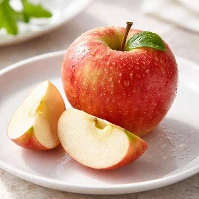
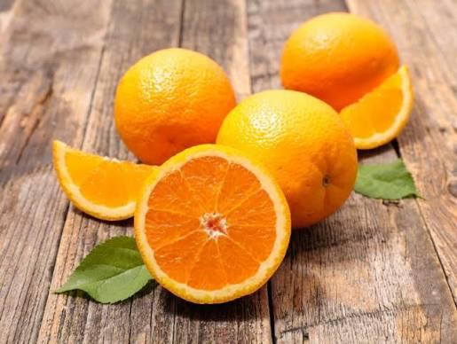
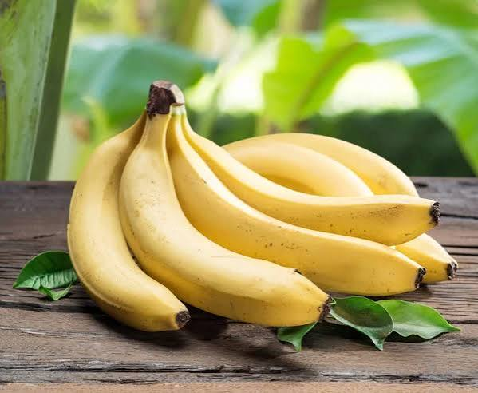
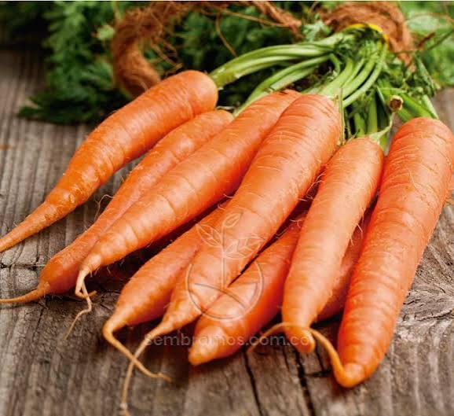
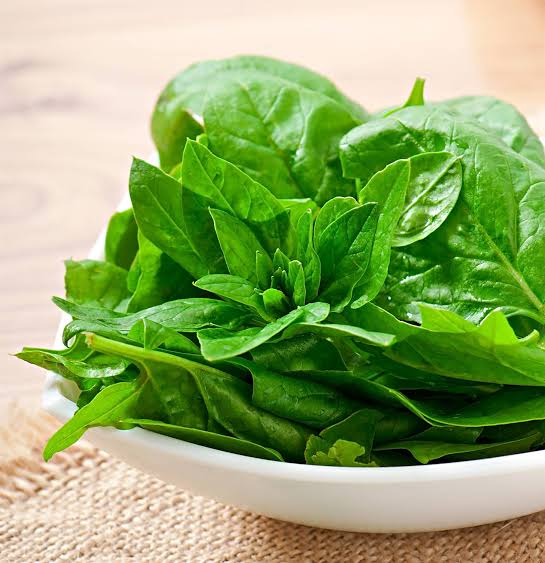
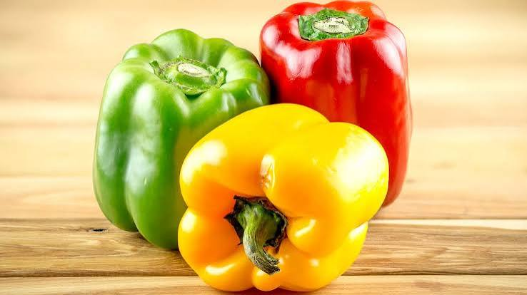
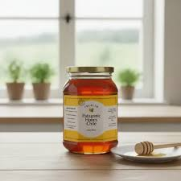

Manzanas Fuji
Manzanas Fuji crujientes y dulces, cultivadas en el Valle del Maule. Perfectas para meriendas saludables o como ingrediente en postres. Estas manzanas son conocidas por su textura firme y su sabor equilibrado entre dulce y ácido..

Naranjas Valencia
Jugosas y ricas en vitamina C, estas naranjas Valencia son ideales para zumos frescos y refrescantes. Cultivadas en condiciones climáticas óptimas que aseguran su dulzura y jugosidad.

Plátanos Cavendish
Plátanos maduros y dulces, perfectos para el desayuno o como snack energético. Estos plátanos son ricos en potasio y vitaminas, ideales para mantener una dieta equilibrada.

Zanahorias Orgánicas
Zanahorias crujientes cultivadas sin pesticidas en la Región de O'Higgins. Excelente fuente de vitamina A y fibra, ideales para ensaladas, jugos o como snack saludable.

Espinacas Frescas
Espinacas frescas y nutritivas, perfectas para ensaladas y batidos verdes. Estas espinacas son cultivadas bajo prácticas orgánicas que garantizan su calidad y valor nutricional.

Pimientos Tricolores
Pimientos rojos, amarillos y verdes, ideales para salteados y platos coloridos. Ricos en antioxidantes y vitaminas, estos pimientos añaden un toque vibrante y saludable a cualquier receta.

Miel Orgánica
Miel pura y orgánica producida por apicultores locales. Rica en antioxidantes y con un sabor inigualable, perfecta para endulzar de manera natural tus comidas y bebidas.